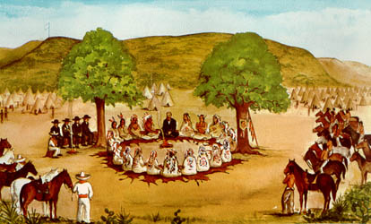

-
The Comanches started off as a Shoshone linguistic group who had moved to the Buffalo Plains also known as the Great Plains.
-
Split off from Shoshone Indians in Wyoming. Came into contact with the horse around this time.

-
Outbreak of cholera and smallpox which decimated Indian herds.
-
Kit Carson led a group of cavalry to the Adobe Walls area, but was forced to retreat when several thousand Comanche attacked his unit.
-
Meeting between US federal representatives and many Plains Indians leaders.Provided reservations of some 4,000 square miles to these tribes, although they had to give up some 60,000 square miles of their own land
-
White Eagle lead a Comanche force in the Texas Panhandle, angry that white hunters were continuing to kill the buffalo that they needed to survive, attacked a village that had sprung up at Adobe Walls to house and serve the bison hunters. It led to the Red River Wars
-
Red River War: Brought about to force the Kiowa, Comanche, and other Indians onto reservations.

-
1875 In April, 200 Kwahada, who had never surrendered arrived at Ft. Sill. In June the last 400 Kwahada with Quanah Parker surrendered.

-
Jerome Agreement—treaty negotiated between Comanche, Kiowa, and Apache Indians, reducing the reservation to roughly 600-700 square miles of land..
